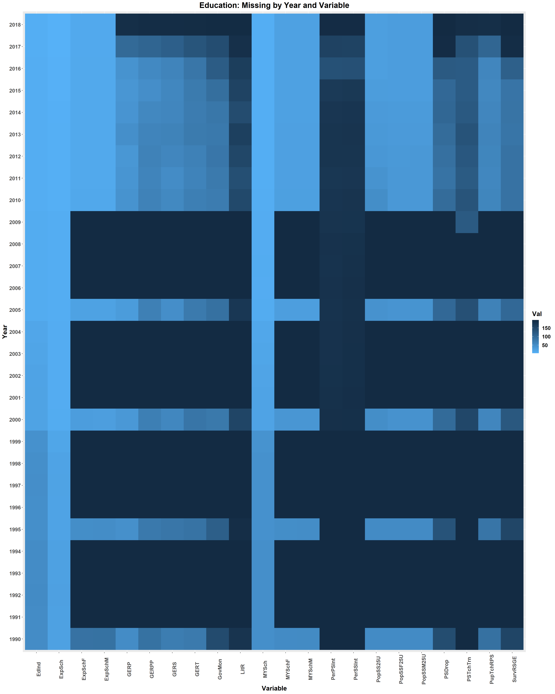

Chapter 5 Results
5.1 Variable Selection
5.1.1 Inequality Variable Selection
From Section 4.0 Missing Data, it was noted from the parallel coordinate plot of the Inequality indicator that the following sets of features had the same proportion of missing data for nearly every country, indicating that they may be related:
“Coefficient of Human Inequality”, “Overall loss in HDI due to inequality (%)”, and “Inequality-adjusted HDI (IHDI)”
“Inequality-adjusted income index” and “Inequality in income (%)”
“Inequality-adjusted education index” and “Inequality in education (%)”
“Inequality-adjusted life expectancy index” and “Inequality in life expectancy (%)”
A scatterplot matrix of all 9 features without the missing data is below and such that pairwise correlations between all features can be examined. The analysis will begin with the feature groups listed above with strong relationships in their missing data, then extend to the remaining feature variable pairs.

First, look at the feature groups where missing data appear to be in equal proportions for most countries:
“Coefficient of Human Inequality”, “Overall loss in HDI due to inequality (%)”, and “Inequality-adjusted HDI (IHDI)”: The three pairwise correlation coefficients between these three features are 0.999, -0.954, and -0.950, showing that these three feature are highly correlated when the data is not missing.
“Inequality-adjusted income index” and “Inequality in income (%)”: Correlation coefficient of -0.644. Despite countries missing data for both feature consistently, the two feature do not appear to have as strong of correlation as other cases discussed.
“Inequality-adjusted education index” and “Inequality in education (%)”: The correlation coefficient is -0.942, showing that these two feature are highly correlated when the data is not missing.
“Inequality-adjusted life expectancy index” and “Inequality in life expectancy (%)”: The correlation coefficient is -0.976, showing that these two feature are highly correlated when the data is not missing.
On the basis of the results above, the following features can be dropped without significant loss of information:
“Overall loss in HDI due to inequality (%)” - due to strong correlation with “Coefficient of Human Inequality” and the fact both share similar missing patterns.
“Inequality-adjusted HDI (IHDI)” - highly correlated with multiple features, especially “Coefficient of Human Inequality” and “Overall loss in HDI due to inequality (%)” (while also sharing the same missing pattern as the latter two).
“Inequality-adjusted education index” - highly correlated with “Inequality in education (%)” when data is present and in terms of missing pattern.
“Inequality-adjusted life expectancy index” - highly correlated with “Inequality in life expectancy (%)” when data is present and in terms of missing pattern.
Looking at the pairplot of the 5 remaining variables, it is noted that even though they do not share the same missing patterns, “Coefficient of Human Inequality” is strongly correlated with 3 of the remaining features (absolute correlation coefficient of ~0.9). Therefore, this feature can also be dropped. As a result, the remaining ‘Inequality’ features to be kept for analysis with other indicators are:
“Inequality-adjusted income index”
“Inequality in income (%)”
“Inequality in education (%)”
“Inequality in life expectancy (%)”
5.2 Education Variable Selection
Initially we pull only the variables that had the lest missings as per the missings analysis.I then run ggpairs across these variables to determine if there is further narrrowing we can do in regards to select. Given that the variables are all relatively, highly correlated, it is decided to just take Education Index as the variable of comparions in the analysis of correlations across human development topics.

5.3 Inequality versus Education (2010 - 2018)
This section will detail the analysis of Inequality versus Education indicators for features selected per the above:
Inequality
Inequality-adjusted income index
Inequality in income (%)
Inequality in education (%)
Inequality in life expectancy (%)
Education
Education Index
Mean Years of Schooling
First, all Inequality variables were compared with all Education variables in a scatterplot, faceted by “Year” from 2010 to 2018 since those were the only years where Inequality data was available. It was noted that “Year” did not seem to separate the data as illustrated in the a sample facet plot below for “Mean Year of Schooling” versus “Inequality in life expectancy (%)”. This was the case for every combination of variables.

Since there are 6 features in total all of which are continuous, a parallel coordinate plot is the most appropriate visualization tool for this type of data. For each of the six features, group by Country and average the data over all Years from 2010 to 2018 ignoring NA’s. The rationale is as follows:
It was shown from the facet plots previously that “Year” did not distinguish any trends.
If every Country-Year combination is a line on the parallel coordinate plot, then it would require that none of the six features have NA’s. This is too strong and may lead to under plotting given the amount of missing data in this dataset. This also ensures that every country also shows up only once or not at all.
Some observations:
The two
Educationvariables, “Education Index” and “Mean Years of Schooling”, is positively correlated. Therefore, analysis for this section will be made with “Education Index” and such analysis implicitly also applies to “Mean Years of Schooling”There is a large cluster of countries (call Cluster 1) with low “Inequality in Income (%)”, mid to high “Inequality Adjusted Income Index”, low “Inequality in Education (%)”, and mid to high “Education Index”.
For Cluster 1, there’s a visible negative correlation between “Inequality in Education (%)” and “Education Index”.
Since for Cluster 1 “Inequality Adjusted Income Index” is visibly negatively correlated with “Inequality in Education (%)”, it can be inferred that the former is positively correlated with “Education Index”.
There is another cluster of countries (call Cluster 2) exhibiting the opposite trend. This cluster of countries has low to mid “Inequality Adjusted Income Index”, high “Inequality in Education (%)”, and low-mid “Education Index”.
For countries in Cluster 2, there is no obvious negative correlation between “Inequality Adjusted Income Index” - “Education Index” and “Inequality in Education (%)” - “Education Index” like in Cluster 1.
Countries in Cluster 1 has a visible right skew in “Inequality in Education (%)” and a slight left skew in “Education Index”, while countries in Cluster 2 exhibit no significant skew for these two features compared to Cluster 1.